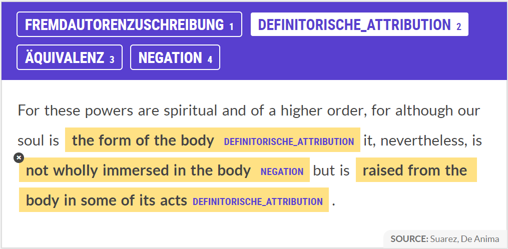

New Era, New Ideas? Conceptual Continuity between Medieval and Early Modern Philosophy
Background
Descartes is commonly conceived as the founding father of modern philosophy, a new era in the history of philosophy which put an end to the scholastic tradition of medieval thinkers. This view, however, has recently been challenged by Dominik Perler who claims that in spite of Descartes' attempt to overcome scholastic theories of mind (and soul) such as Francisco Suárez's account, he nevertheless remains in a medieval paradigm. This is because, according to Perler, Descartes' seemingly new approach to the theory of mind can in fact be traced back to the work of William of Ockham, i.e. yet another medieval scholar.1
As a consequence, this assumption gives rise to a much more continuous, and thus more differentiated, perspective on the history of philosophy by devaluating the role usually attributed to the 'great thinkers' such as Descartes. In other words, it opens up the possibility to rethink the history of philosophy by considering Descartes only as one - nonetheless highly important - contributer to the progressive development from medieval to early modern philosophy. According to this view, the line should not be drawn between medieval and early modern debates, but rahter between various competing conceptual approaches originating from the medieval era which were still the subject of philosophical discussion in the early modern period.2
(Anmerkung: meine Behauptungen, inkl. die Darstellung von Perlers Posisiton, sind etwas grob. Daran sollte ich noch feilen)
The Idea
The present investigation aims at re-evaluating the role of Descartes' work in the transition from scholasticism to modern philosophy by applying computational means to the field of the history of philosophical ideas. To do so, texts from Descartes, Ockham and Suárez are going to be compared with respect to their degree of conceptual similarity, i.e. the way certain philosophical key concepts are characterised throughout their writings, in particular the concepts of soul and mind. The analysis thus amounts to an empirical verification of Perler's argument according to which Descartes' thinking is still heavily influenced by the scholastic tradition - a claim that ultimately casts doubt on the dominant view of the French philosopher as the founding father of modern philosophy.
But the historical line drawn between medieval and early modern philosophy is only one example of the traditional tendency to divide the continuous development of philosophical thinking into distinct periods, each of them having a definite beginning and ending. The present investigation on the yet unexplored potential of what current advancements in the field of natural language processing (NLP) can contribute to historical questions in philosophy is thus at the same time intended to provide a new method which offers a novel perspective on the history of ideas. Hence, future research could apply the method developed in here to other distinctions in the history of philosophy and thereby contribute to the emergence of a (fairly) new field of research at the intersection of philosophy and computer science, i.e. to a computational approach to the history of philosophical ideas.
(Anmerkung: auch hier alles etwas zu grob dargestellt)
Research Question
The principal question which led to the present investigation can be summarised as follows: if different philosophical traditions (or eras) are distinguishable by the way some of their respective protagonists characterise the most important key concepts, then does a large-scale (computational) semantic anaylsis of the concepts used at different points in the history of philosophy lead to the discovery of new connections which force us into giving up long established distinctions?
With respect to the distinction between medieval and early modern philosophy, the idea is thus to take into account all the relevant writings of Ockham, Suárez, and Descartes. The open-source NLP-library SpaCy will first be used to identify all the passages in which the authors mention the key concept(s) in question. A model for named entity recognition (NER), specifically trained for this purpose, will then categorise those propositions according to the different ways in which the authors characterise the concept(s) - such as Fremdautorenzuschreibung, definitorische Attribution, Äquivalenz, and Negation. This will allow to extract only the most relevant information on which a (computational) comparison with respect to their mutual semantic similarity will then be carried out. Hence, the initial research question can be operationalised as follows: if the degree of semantic similarity between the ways Ockham and Descartes (i.e. a medieval and an early modern philosopher) characterise the concept(s) in question is significantly higher than the degree of semantic similarity between the ways Suárez and Ockham (i.e. two medieval philosophers) characterise the concept(s), then this will amount to an (at least partial) empirical affirmation of the progressive/evolutionary model of explanation regarding the development from medieval to early modern philosophy.
The Method
-
Preparation 1 (before importing the txt-files into Jupyter Notebook)
- find all the relevant writings in txt-format and in one coherent language
- if source = pdf/scan, use tesseract to obtain txt-file. also consider some (manual) pre-processing (either before using tesseract or as part of step 4 below): get rid of extraneous material such as cover page, foreword/intro/epilogue (if not written by author in question), index, etc. Special treatment for 'dialogues' (such as objection-and-response section in Descartes' Meditations, or Plato's socratic dialogues): only take into account responses, i.e. those parts of the dialogue which express the view of the author. Another problematic 'style' requiring special treatment: citations (a kind of 'Fremdautorenzuschreibung' which cannot be identified without context)
- merge all the relevant writings of the three authors, i.e. create 3 big txt-files, one for each author, containing all the relevant raw data: Descartes.txt, Suarez.txt, Ockham.txt
- clean up the txt-files: page numbers, footnotes, words sticking together etc. (ideally: write or find an algorithm to do the job for me)
-
Preparation 2 (in Jupyter Notebook)
- create doc-objects for each of the three txt-files, divide into sentences using "sentencizer", get rid of new lines
- create dataframe_A with 4 columns:
- sentence number
- enumeration of all sentences in doc_Descartes
- enumeration of all senteces in doc_Suarez
- enumeration of all senteces in doc_Ockham
- turn dataframe_A into json-file. This is the first checkpoint
-
Preparatory Analysis
- use SpaCy Matcher to define pattern = [{"LEMMA" : "soul" and/or "mind"}]
- use Prodigy to train/improve model for coreference relationships in order to detect implicit references to the terms in question
- apply steps 3.1 and 3.2 to doc_Descartes, doc_Suarez, and doc_Ockham (i.e. identify all explicit and implicit references to concept(s) in question)
- create dataframe_B with 4 columns for each author, i.e. 12 columns in total (creation of dataframe requires several steps, maybe divide into 2 separate dataframes, one for spans and sentence number, one for sentence number and corresponding sentence):
- span_start for matches in Descartes
- span_end for matches in Descartes
- sentence number (acc. to dataframe_A) in which span occurs
- text of corresponding sentence
- span_start for matches in Suarez
- span_end for matches in Suarez
- sentence number (acc. to dataframe_A) in which span occurs
- text of corresponding sentence
- span_start for matches in Ockham
- span_end for matches in Ockham
- sentence number (acc. to dataframe_A) in which span occurs
- text of corresponding sentence
- turn dataframe_B into json-file. This is the second checkpoint
- manually analyse approx. 100 of those sentences in order to identify different ways/patterns in which the authors characterise the concept(s) in question - such as Fremdautorenzuschreibung, definitorische Attribution, Äquivalenz, Negation
- use Prodigy to train a model (on approx. 500 cases) for specialised named entitiy recognition (NER), i.e. for categorising the sentences in dataframe_B according to the different ways the authors characterise the concept(s)
- apply the trained model for NER on the sentences in dataframe_B, i.e. the sentences in columns 4 (d), 8 (h), and 12 (l) (maybe turn into 3 separate doc-objects, one for each author, in order to facilitate analysis)
- extract only those parts of the sentences which SpaCy has recognised as one of the named entities for which it was trained in step 3.7, i.e. extract only those parts of the sentences in which the authors characterise the concept(s). The underlying idea of step 3.9 is the following: since all remaining sentences are dealing with the concept of "soul" and/or "mind", an analysis of their semantic similarity will yield a high degree of similarity, no matter how the three authors elaborate on those concepts. One should thus ignore the common feature of all those sentences (i.e. the term "soul" and/or "mind") and only take into account the most relevant information. This will allow for a more fine-grained semantic comparison
- create dataframe_C with x columns for each author, where x is the number of patterns which have been identified in step 3.6, i.e. the different ways in which the authors characterise the concept(s) (every row contains only the named entity recognised by the trained model):
- all instances in which Descartes characterises the concept(s) in question by means of a Fremdautorenzuschreibung
- all instances in which Descartes characterises the concept(s) in question by means of a definitorische Attribution
- all instances in which Descartes characterises the concept(s) in question by means of a Äquivalenz
- all instances in which Descartes characterises the concept(s) in question by means of a Negation
- all instances in which Descartes characterises the concept(s) in question by means of a (...)
- all instances in which Suarez characterises the concept(s) in question by means of a (...)
- all instances in which Ockham characterises the concept(s) in question by means of a (...)
- turn dataframe_C into json-file. This is the third checkpoint (and maybe turn again into three separate doc-objects, one for each author)
-
Final Analysis
- analyse semantic similarity between the three sets of the different ways the three authors characterise the concept(s) respectively, where every set contains x subsets (two remarks: (i) if necessary, train/improve word vectors for philosophical terminology in order to provide some 'contextual knowledge' and thereby enhance the subsequent comparison of semantic similarity, (ii) maybe decide not to take into account occ. of certain NER-categories, such as Fremdautorenzuschreibung, since those occ. do in fact not express the point of view of the author in question. Identifying those occ. was thus still highly important!):
- doc_DescartesNER.similarity(doc_SuarezNER)
- doc_DescartesNER.similarity(doc_OckhamNER)
- doc_SuarezNER.similarity(doc_OckhamNER)
- compare degree of semantic similarity: is degree of similarity Descartes/Ockham significantly higher than degree of similarity Suarez/Ockham?
- analyse semantic similarity between the three sets of the different ways the three authors characterise the concept(s) respectively, where every set contains x subsets (two remarks: (i) if necessary, train/improve word vectors for philosophical terminology in order to provide some 'contextual knowledge' and thereby enhance the subsequent comparison of semantic similarity, (ii) maybe decide not to take into account occ. of certain NER-categories, such as Fremdautorenzuschreibung, since those occ. do in fact not express the point of view of the author in question. Identifying those occ. was thus still highly important!):
What I have done so far
All the work I have done during the semester was rather preparatory and was mostly carried out for educational reasons, i.e. in order to improve my understanding of the numerous operations/tools provied SpaCy. For this reason, I decided to only work with two small, non-representative extracts of Suárez' and Descartes' writings: Sydney Penner's (2011) English translation of Suárez' De Anima, Disputation 12, Question 2, and Elizabeth S. Haldane's (1911) English translation of Descartes' Meditationes. With those two sample texts, I tried out different approaches for preparing, analysing, and comparing the data which allowed me to progressively develop a detailed strategy for my main project which I am now going to carry out in the form of a seminar paper.
At the current state of my project, there are five Jupyter Notebooks: two Notebooks for preparing/pre-processing the raw data (one Notebook per sample text), two Notebooks for analysing the data (again, one Notebook per sample text), and one Notebook for the final comparison. The structure and the setup of the different Notebooks thus already resemble the way I am going to organise the main project.
In Preparation_Sample_Meditationes.ipynb and Preparation_Sample_DeAnima.ipynb respectively, I first divide the raw text into sentences using SpaCy's Sentencizer, get rid of new lines, and put all the sentences in a dataframe assigning a sentence number to every sentence. I then identify and isolate all the sentences in which Suárez and Descartes (respectively) mention the term soul by using SpaCy's Matcher: pattern = [{"LEMMA":"soul"}]. Finally, I put the spans of the matches together with the match-ID in a dataframe and print out the sentences in which a match has been found. This procedure will remain more or less the same for the main project - with a few exceptions: some of the operations were carried out 'manually', I thus need to find a way to 'automatise' those steps; I will train a model for detecting coreference relationships as for now, I am ignoring implicit references to the concept(s) in question.
After having identified all the (explicit) references to the term soul, in Analysis_Sample_Meditationes.ipynb and Analysis_Sample_DeAnima.ipynb, I manually analyse these sentences in order to improve my understanding of how the two authors characterise the term at stake. Based on this very small sample (see Fig.2 below), I already identified four different patterns: Fremdautorenzuschreibung, definitorische Attribution, Äquivalenz, and Negation (see my manual analysis of the sentences in the two Noteboks). However, I should analyse at least 100 sentences in order to gain an adequate understanding of such characterisations and thus be able to identify the most important patterns.
| Sent. Num. | De Anima | Meditationes |
|---|---|---|
| 1 | And, of course, having supposed that they are really distinguished from the essence [of the soul], it is much more probable that they are also [really] distinguished from each other. | In addition to this I considered that I was nourished, that I walked, that I felt, and that I thought, and I referred all these actions to the soul: but I did not stop to consider what the soul was, or if I did stop, I imagined that it was something extremely rare and subtle like a wind, a flame, or an ether, which was spread throughout my grosser parts. |
| 2 | Sixth, because our soul is the form of the body. | Let us pass to the attributes of soul and see if there is any one which is in me? |
| 3 | Therefore, just as other forms depend on the heavens in their operations and follow influence from it, so also our soul and will. | I do not now admit anything which is not necessarily true: to speak accurately I am not more than a thing which thinks, that is to say a mind or a soul, or an understanding, or a reason, which are terms whose significance was formerly unknown to me. |
| 4 | Seventh, will and sensitive appetite are powers rooted in the same soul. | And although possibly (or rather certainly, as I shall say in a moment) I possess a body with which I am very intimately conjoined, yet because, on the one side, I have a clear and distinct idea of myself inasmuch as I am only a thinking and unextended thing, and as, on the other, I possess a distinct idea of body, inasmuch as it is only an extended and unthinking thing, it is certain that this I [that is to say, my soul by which I am what I am], is entirely and absolutely distinct from my body, and can exist without it. |
| 5 | For it is the same soul desiring in either case. | And also from the fact that amongst these different sense-perceptions some are very agreeable to me and others disagreeable, it is quite certain that my body (or rather myself in my entirety, inasmuch as I am formed of body and soul) may receive different impressions agreeable and disagreeable from the other bodies which surround it. |
| 6 | Moreover, the same soul cannot at the same time desire contraries. | But certainly although in regard to the dropsical body it is only so to speak to apply an extrinsic term when we say that its nature is corrupted, inasmuch as apart from the need to drink, the throat is parched; yet in regard to the composite whole, that is to say, to the mind or soul united to this body, it is not a purely verbal predicate, but a real error of nature, for it to have thirst when drinking would be hurtful to it. |
| 7 | All the ancient pagans who asserted that our soul is material and mortal especially erred in this question. | But it is quite otherwise with corporeal or extended objects, for there is not one of these imaginable by me which my mind cannot easily divide into parts, and which consequently I do not recognise as being divisible; this would be sufficient to teach me that the mind or soul of man is entirely different from the body, if I had not already learned it from other sources. |
| 8 | Just as they posited two gods, one the principle of goods, the other of bads, so also they posited two souls in us, one which necessitates to good, the other to bad. | |
| 9 | For these powers are spiritual and of a higher order, for although our soul is the form of the body it, nevertheless, is not wholly immersed in the body but is raised from the body in some of its acts. | |
| 10 | Nor is it repugnant that the same soul desire contraries through different powers, especially if it constrains the inclination of one power through the other power. |
Fig.2: list of sentences in which Suárez and Descartes mention (respectively) the term soul in the two sample texts.
In addition to the manual analysis, I also carried some computational analyses with respect to the linguistic properties of the sentences using SpaCy's token.pos_ and token.dep_. Furthermore, I extracted all the adjectives and verbs used in the sentences. However, I will not adopt those last two operations in the main project - for reasons that become evident in the last Notebook.
In the final Notebook Comparison_Sample_DeAnima_Meditationes.ipynb, I carry out two alternative comparsions with respect to the semantic similarity. First, I compare the similartiy between the two sets of entire sentences, using the command similarity = doc_DeAnima_soul.similarity(doc_Meditationes_soul). Second, I compare the similarity between the two sets of adjectives and verbs used in the two respective sets of sentences, using similarity = doc_DeAnima_AdjVrb.similarity(doc_Meditationes_AdjVrb).
As predicted above (in step 3.9 of section The Method), comparing the semantic similarity between entire sets of relevant sentences yields a high degree of similarity (approx. 0.978) since all sentences are dealing with the term "soul". Hence, this method is inadequate for the present purpose and was only carried out for educational reasons, i.e. in order to improve my understanding of the operation. Furthermore, I am less interested in the absolute degree of semantic similarity (which I regard as rather meaningless) than in the degree of semantic similarity relative to another degree of semantic similarity. One can then ask: is the degree of semantic similarity of comparison A significantly higher than the degee of semantic similarity of comparison B? This requires taking into account a third doc_object, i.e. the writings of Ockham, which - however - will only be done in the main project, i.e. as soon as the methodological problems encountered so far have been solved. It must also be clarified what it means for a degree of similarity to be significantly higher than another one.
The second comparison also yields a high degree of semantic similarity (approx. 0.924). But it has already become evident from the preceeding manual analysis that the method of extracting only the adjectives and verbs directly connected to the term "soul" will not solve the problem since the characterisation of a philosophical term (such as "soul") is far more complex than this, i.e. it goes beyond the simple analysis of those adjectives and verbs. The degree of semantic similarity (and the comparison as such) is thus meaningless and was, again, only carried out for educational reasons.
However, my work on the last Notebook - combined with some very helpful advice from Prof. Gerd Graßhoff - made me realise how I should proceed for my main project. As indicated above (in the section The Method), I will use Prodigy to train a specialised model for NER which recognises the different ways the authors characterise the concept(s) in question. Now, at the end of the semester, I have started working with Prodigy, which, as can be seen in Fig.3 and Fig.4, gave me a first idea of how to carry out the training sessions:
 Fig.3: Example of training session with Prodigy for specialised NER.
 Fig.4: Another example of a training session with Prodigy for specialised NER.
Fig.4: Another example of a training session with Prodigy for specialised NER.
To sum up my progress so far, after having acquired a basic understanding of Python in general and SpaCy in particular during the semester, I am now able to turn to the actual elaboration of my project as outlined above in the section The Method.
What still needs to be done
For the actual elaboration of my project, I will proceed as follows:
- find a set of approx. 100 sentences in which the three authors talk about the term soul and/or mind for a manual analysis in oder to identify the most important patterns of how they characterise philosophical concepts
- define those patterns as named entities
- find a set of approx. 500 sentences in which those patterns occur, turn into jsonl-format and train a specialised NER-model using Prodigy
- apply the model to the sample texts to test their accuracy
- if sufficiently accurate, proceed as outlined above in The Method
- in addition to the development of (i) a model for specialised NER-categories, and (ii) the three Jupyter Notebook templates 'preparation', 'analysis', and 'comparison' (which are then going to be applied to the writings of Descartes, Ockham, and Suarez), I will conduct two further training sessions: (a) for a specialised model for coreference relations in order to detect implicit references the concepts in question, (b) for a specialised model for word vectors for philosophical terminology in order to provide the machine with some 'contextual knowledge'
Some Challenges, Concerns, and Questions
The following challenges, concerns, and questions must still be addressed over the next weeks and months:
- I have not yet found all the relevant writings in txt-format and in one coherent language (Latin or English)
- list of relevant writings:
- René Descartes: Meditationes de prima philosophia, The Passions of the Soul, Principia Philosophiae, La Recherche de la Vérité
- William of Ockham: Quodlibetal Septem, Ordinatio, Reportatio
- Francisco Suárez: De Anima, Disputationes Metaphysicae, De actibus qui vocantur passiones
- possible solution: (i) scan original Latin texts or English translations, (ii) extract text from images/pdfs using Google's OCR-software Tesseract
- if it turned out that I have to work with the English translations (because the original versions are not available as txt-files), then this would (i) significantly reduce the amount of available data for my computational analysis as most texts have never (or rather: not yet) been translated into English, and (ii) mean that the results of my analysis do not have any value for questions regarding the conceptual contiunity between medieval and early modern philosophy in particular, and regarding the history of philosophical ideas in general (as initially claimed). Instead, my work would turn into the development of a methode which leaves its adequate application to future research.
- for final comparison: what does it means for a degree of semantic similarity to be significantly higher than another?
- improve the chain of operations in the different juypter notebooks, i.e. 'automatise' the operations which, for now, were carried out manually
- the method, as conceived at present, presupposes that every author (philosopher) in question defends one consistent theoretical position throughout all of his works (or at least in all the works that are taken into account for the analysis). However, this is usually not the case: people change their view.
- Two solutions: (i) only take into account those writings of which one knows that they are in line with a certain position held by the author at a particular moment in his lifetime. (ii) possibility of applying method developed in here (comparison of different phil. eras/trad.) to comparison of different 'stages' in a philosopher's thinking, i.e. move method from broad historical level to individual level
- distinction between theories of soul and theories of mind? Maybe include both terms as key words and treat as equivalent? Important to discuss this problem (of translation?) Both mens/mentis and animus/anima can be translated as soul and/or mind.
- compare, e.g., the title of Descartes' 6th Meditation in original Latin version: "De rerum materialium existentia & realis mentis a copore distinctione" (and thus, all Engl. transl. used mind instead of soul) with the title in the French version (which was read and approved by Descartes himself): "De l'existence des choses matérielles, et de la réelle distinction entre l'âme et le corps de l'homme". Hence, a reason to consider soul and mind, at least in Descartes' writings, as synonymous?
- what does it mean (what are the theoretical implications) to operationalise the (traditional, close-reading) method for analysing conceptual continuity (and concept drift) by means of the computational method developed in here? Is the computational method really adequate? Is it supposed to aid or guide a subsequent close-reading analysis (a 'hybrid method')? Or is the approach intended to replace, at least to a certain extent, the traditional method (a 'fully autmoatic semantic analysis')?
Literature (Anm.: kann ggf. gestrichen und durch bib-file ersetzt werden)
-
Background
-
Dominik Perler, "What are Faculties of the Soul? Descartes and his Scholastic Background", in: John Marenbon (ed.), Continuity and Innovation in Medieval and Modern Philosophy: Knowledge, Mind and Language, Oxford, OUP, 2013, pp.9-38
-
Empirical sources for tests conducted during the semester
-
René Descartes, Meditations on First Philosophy, transl. by Elizabeth Haldane, Cambridge, CUP, 1911 (open-access, copyright expired (?) Anmerkung zu bib-entry: in der von mir verwendeten txt-Version dieser Übersetzung heißt es Copyright: 1996, Internet Encyclopedia of Philosophy. This file is of the 1911 edition of The Philosophical Works of Descartes (Cambridge University Press), translated by Elizabeth S. Haldane. Deshalb bib-entry anpassen?)
-
Francisco Suárez, De Anima, Disputation 12, Question 2, transl. by Sydney Penner, online, 2011, sydneypenner.ca/su/DA_d12q2.pdf, last retrieved on 12.11.20 (open-access, copyright S. Penner)